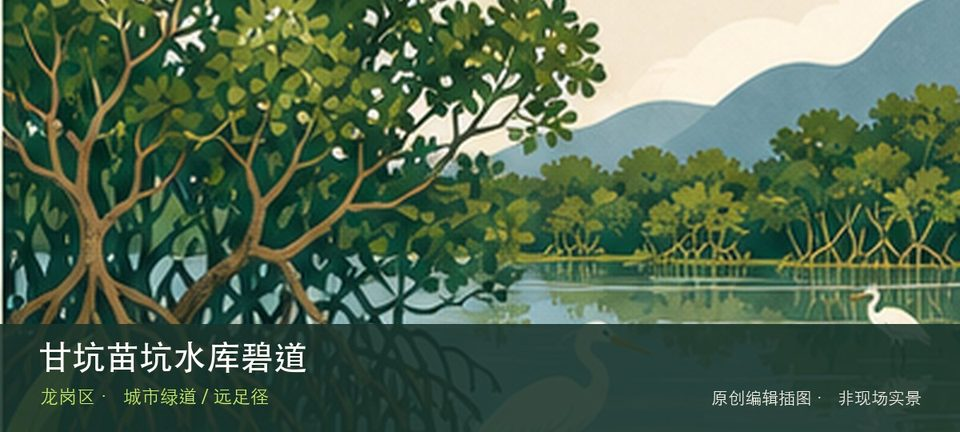

适合谁
适合有基础步行体力、愿意按天气调整路线的人；行动不便者应只选择平缓开放段。

SHENZHEN GUIDE · 328
平湖街道平湖生态园甘坑—苗坑水库 · 城市绿道 / 远足径
甘坑苗坑水库碧道位于平湖街道平湖生态园甘坑—苗坑水库，约9.63公里的郊野型湖库碧道连接甘坑、苗坑两座水库，以库尾慢行道路、林下坐凳、湿地和季节花木组成平湖生态园内的长线山水游线。这里不是只有一个打卡点：甘坑与苗坑双库景观提供主要线索，9.63公里库尾慢行路补足另一层现场关系。现场不必追求一次走完，先在甘坑与苗坑双库景观与9.63公里库尾慢行路之间确定主线，再按体力、日照和天气保留折返方案。山地、滨水或林下路面会随降雨改变，当天预警和开放边界始终比旧轨迹更优先。
WHY GO
适合有基础步行体力、愿意按天气调整路线的人；行动不便者应只选择平缓开放段。
9.63公里不必一次走完：先选甘坑或苗坑一座水库，沿库尾慢行路看芦花湿地和林下节点，到预定时间即折返；出发前保存入口与返程位置。
公共交通或网约车导航至平湖生态园、甘坑—苗坑水库开放入口；园区尺度大，先确认返回入口和末班接驳。
平湖生态园停车容量以现场为准；自驾只停开放停车区，不进入水库管理道路，周末满位后改用公共交通接驳。
10月至次年4月适合较长距离步行，冬春可看落羽杉、芦花和花木变化；夏季补水防晒，暴雨后不贴近库岸和湿地边缘。
NEARBY IDEAS
 编辑配图·非现场实景
编辑配图·非现场实景
甘坑水库碧道位于平湖街道平湖生态园，深圳环境科学研究院至甘坑水库，约0.48公里的甘坑河短线碧道通过滨水绿带、慢行系统、…
 编辑配图·非现场实景
编辑配图·非现场实景
平湖生态园位于平湖街道锦富路25号，约248公顷的大尺度城市生态园以山林、水体和果园景观承接平湖片区的郊野休闲需求。
禾花美术馆位于平湖禾花社区恒路E时代大厦二层，官方名录将它列为龙岗区美术馆。它处在社区、产业楼宇和城市更新交界处，适合把…